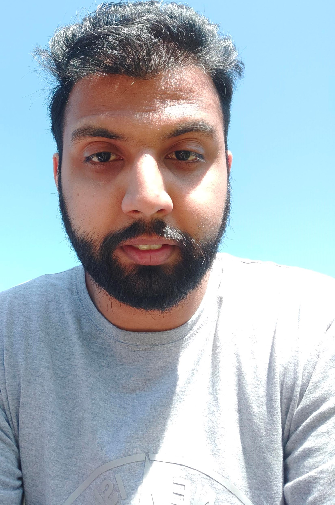

Mohammed Azeem Ditta

Summary
I am a curious person I like to try things out and my goal at the moment now is to learn and understand programming.
Education
- South & City Collage 2014 to 2017
- City & Guilds: Level 1 IT System Support – PC Maintenance
- City & Guilds: Level 2 ICT System Support
- City & Guilds: Level 3 ICT System Support
- City & Guilds: Level 1 Functional Skill Mathematics
- City & Guilds: Level 2 Functional Skill Mathematics
- City & Guilds: Level 1 Functional Skill English
- LMPQ 2017 to 2018
- Pearson BTEC: Level 2 Works skills For Effective Learning and Employment.
- MTA: Software Development Fundamentals
- MTA: Windows Operating System Fundamentals
- MTA: Network Fundamentals
- MTA: Mobility and Device Fundamentals
- MTA: Cloud Fundamentals
- City & Guilds: Level 3 Business Processes
Work Experience
K3 Business Technologies (Support Consultant) 10/2017 to Present
Customer Success
- Providing 1st and 2nd line support for multiple retail systems including Microsoft RMS, SQL, LSone, MStore, and K3|Imagine.
- Providing telephone-based customer service, solving software-based issues remotely with the use of TeamViewer and N-able.
Skills
- Team Work – working on several projects at K3 BTG I understand the importance of teamwork.
- Prioritisation and delegation – whilst on the projects, it is important to not only prioritize effectively but also understand individual strengths and delegate accordingly
- Customer Service - Talking to customers professionally and finding solutions to their issues
- Strong Work Ethic
- Software and systems–Microsoft Office, Microsoft Teams, TeamViewer, N-able, and Computer Hardware.
- Programme language-HTML and SQL